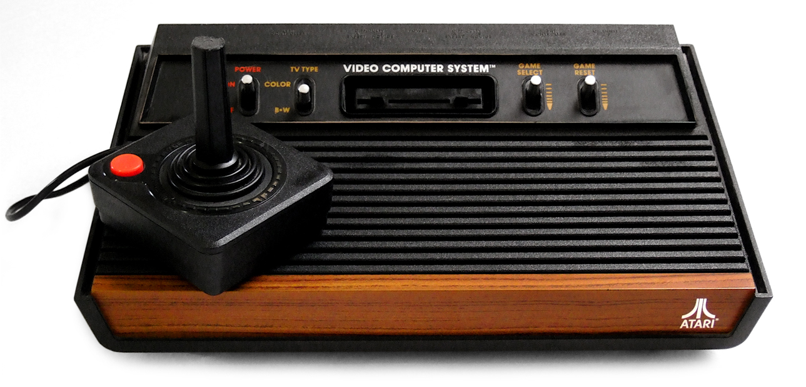
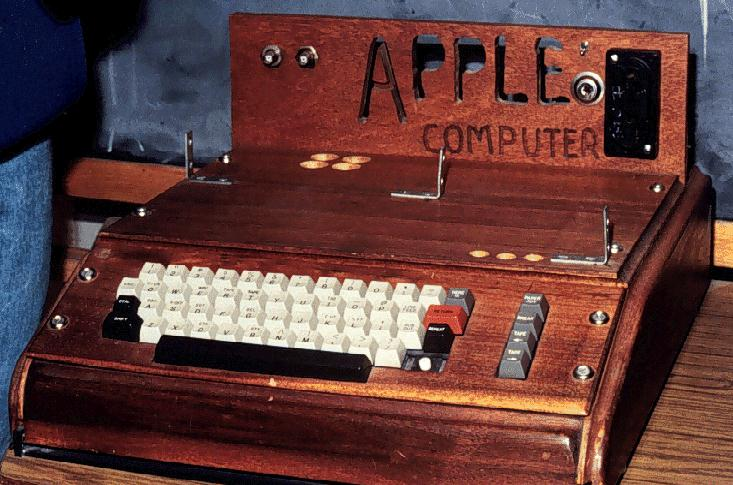
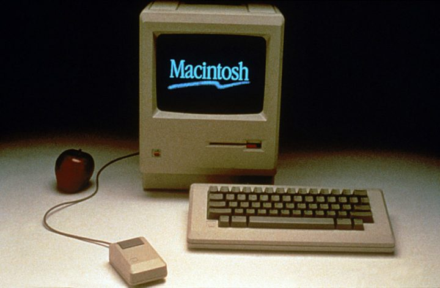
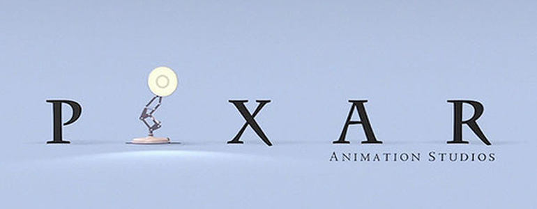

pagina inicial
Primeiro emprego
Em 1974, Steve Jobs trabalhou como designer de videogames na Atari. Depois de vários meses. Steve deixou a empresa e viajou para a Índia em busca de enriquecimento espiritual.

Criação da Apple
Em 1976, Jobs e Wozniak instalaram uma “fabrica” de computadores, na garagem da casa da família de Jobs na Califórnia. Em 1976 é lançado o computador "Apple I", o primeiro computador pessoal, vendido já montado, que era apenas uma placa mãe coberta com alguns chips e instalada em uma caixa de madeira. Em 1977 é lançado o computador "Apple II", que apresentava um mouse e um disco rígido interno. Com o passar dos anos, as criações de Jobs e Wozniak revolucionaram a indústria de computadores, tornando as máquinas menores e mais baratas.

Em janeiro de 1984 é lançado o "Macintosh" apelidado de "torradeira bege", que esquentava muito, pois não tinha ventilador. Apesar do sucesso das vendas e do desempenho superior aos PCs da IBM, o Macintosh não era compatível com a IBM. Centralizador e explosivo, nesse mesmo ano, Steve Jobs é afastado de sua própria empresa, por divergir das táticas de vendas.

Pixar
Em 1986, Steve Jobs compra a empresa de animação de George Lucas, que mais tarde se tornou a Pixar Animation Studios. Depois de investir 50 milhões de dólares na empresa, passou a produzir filmes como Toy Story e Procurando Nemo. Em 2006, o estúdio se fundiu com os estúdios Walt Disney.
